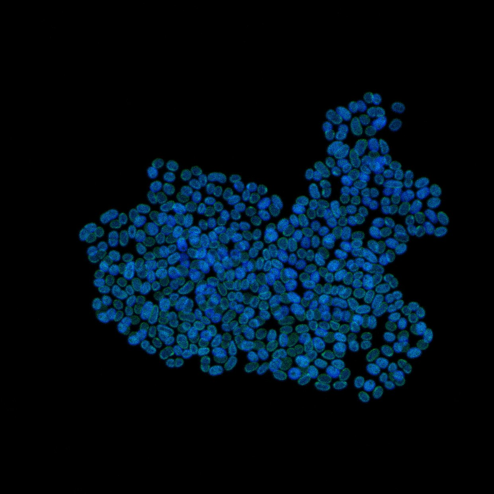

I am a researcher interested—perhaps even slightly obsessed—with understanding how oxygenic photosynthesis emerged and evolved before profoundly transforming the biosphere.
My work focuses on the photosynthetic apparatus and thylakoids in early-diverging cyanobacteria, often referred to as basal cyanobacteria.
Although I am a genomicist, I use whatever approaches are best suited to these questions, including phylogenetics, cyanobacterial culturing, fluorescence microscopy, microfluidics, culturomics, and of course theoretical work.
A last thing, my favorite organism is Gloeobacter. If that’s also true for you, feel free to get in touch!